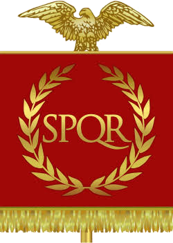
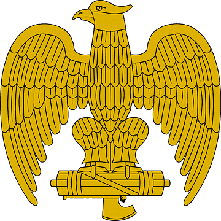
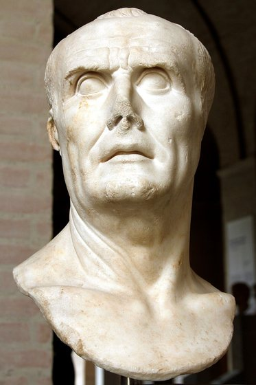
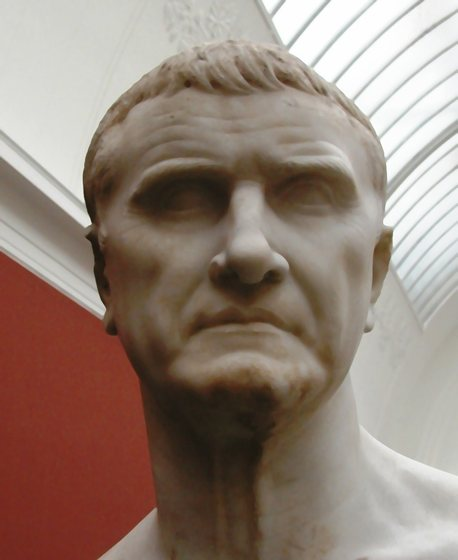
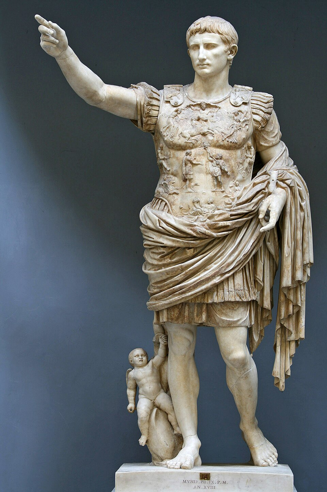
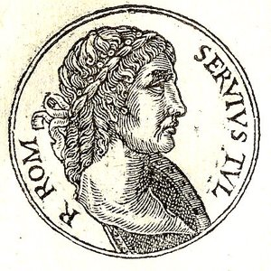
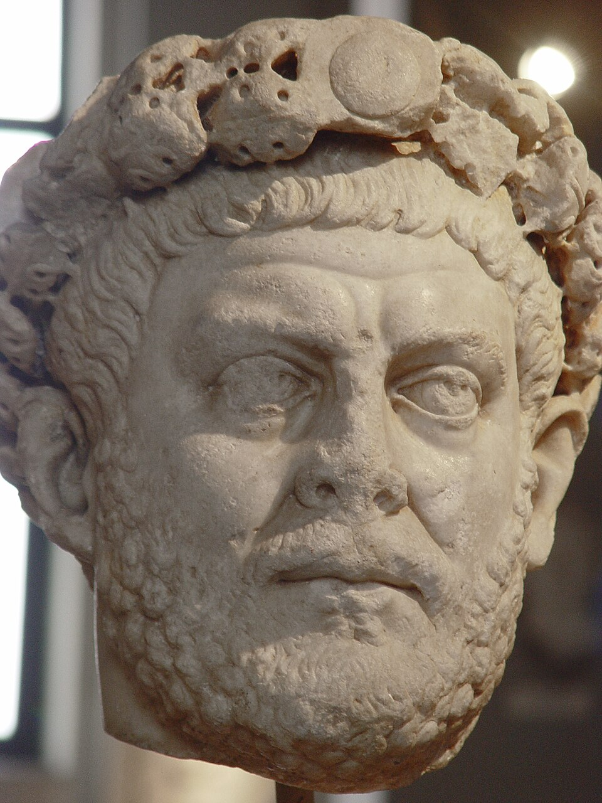
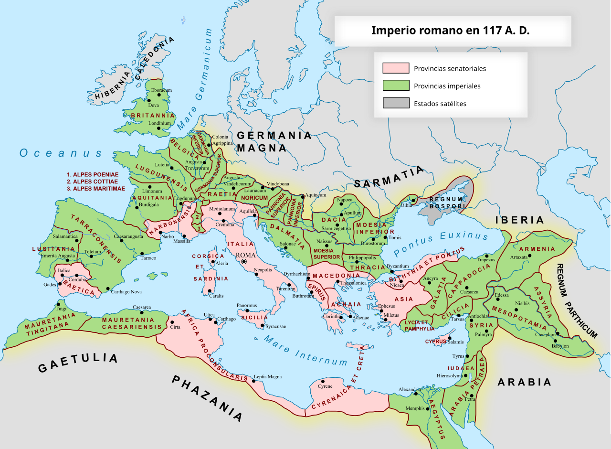

Línea de tiempo interactiva — de Rómulo a la caída de Constantinopla
Ab urbe condita

✝ El cristianismo en Roma
Orígenes y persecuciones (s. I–III d.C.): el cristianismo surge en Judea bajo Tiberio y se expande por el Mediterráneo gracias a la Pax Romana y a las redes comerciales del Imperio. Al negarse a rendir culto al emperador, los cristianos son vistos como una amenaza para la unidad religiosa del Estado. Nerón los culpa del incendio de Roma en el 64 d.C.; siguen persecuciones bajo Domiciano, Decio, Valeriano y, la más dura de todas, la Gran Persecución de Diocleciano (303–311 d.C.).


Tolerancia y legalización (s. IV d.C.): en el 311, el emperador Galerio publica un edicto de tolerancia en su lecho de muerte. En el 313, Constantino I y Licinio firman el Edicto de Milán, que otorga libertad de culto a los cristianos en todo el Imperio. Constantino, tras su victoria en el Puente Milvio (312 d.C.) bajo el signo "in hoc signo vinces". ("Con este signo vencerás") Así, se convierte en el gran protector de la nueva fe.
Concilios y unidad doctrinal: en el 325 d.C., Constantino convoca el Concilio de Nicea para resolver la controversia arriana y fijar el Credo niceno. Nuevos concilios (Constantinopla 381, Éfeso 431, Calcedonia 451) siguen definiendo la doctrina cristiana.

Religión de Estado (380 d.C.): con el Edicto de Tesalónica, Teodosio I proclama al cristianismo niceno como religión oficial del Imperio Romano. Poco después se prohíben los cultos paganos y se cierran templos como el Serapeum de Alejandría (391 d.C.).
Legado en Oriente: tras la caída de Roma en el 476 d.C., el cristianismo ortodoxo permanece como pilar del Imperio Bizantino, con el emperador como protector de la Iglesia (cesaropapismo) y Constantinopla como su gran centro espiritual. La controversia del Iconoclasmo (726–843 d.C.) sacude al Imperio durante más de un siglo por la veneración de íconos religiosos, hasta que el "Triunfo de la Ortodoxia" restaura definitivamente su culto. La distancia cada vez mayor con Roma en materia de autoridad papal, liturgia y teología estalla en el Cisma de Oriente y Occidente (1054 d.C.), que separa para siempre a las Iglesias católica y ortodoxa. Misioneros como Cirilo y Metodio llevan la fe ortodoxa —y un alfabeto propio, el cirílico— a los pueblos eslavos, extendiendo el legado religioso de Bizancio mucho más allá de su caída en 1453.

El cristianismo en Occidente: los pueblos bárbaros que se asientan en el Imperio —visigodos, vándalos, ostrogodos— ya son mayoritariamente cristianos, pero de credo arriano (niegan la plena divinidad de Cristo), lo que los enfrenta religiosamente con la población romana nicena a la que gobiernan. En Hipona, el obispo Agustín escribe La Ciudad de Dios (413–426 d.C.) para responder a quienes culpan al cristianismo por el saqueo de Roma de Alarico en el 410. El papa León I gana enorme prestigio al persuadir, según la tradición, a Atila de no marchar sobre Roma en el 452, y al negociar sin éxito con el vándalo Genserico en el 455 para limitar el saqueo de la ciudad: con el poder imperial desmoronándose, el obispo de Roma empieza a llenar el vacío de autoridad en Occidente.
🦅 El águila de la legión
Antes de Mario (siglo IV–II a.C.): cada manípulo de la legión llevaba su propio signum, coronado por la figura de un animal — el lobo, el minotauro, el caballo, el jabalí o el águila — que servía de punto de referencia en la batalla y de objeto de culto para sus soldados.
La reforma de Mario (104 a.C.): el cónsul Cayo Mario unifica los estandartes de la legión bajo un único símbolo, el aquila de plata (más tarde de oro), portado por el aquilifer, el abanderado de mayor rango entre los suboficiales. El águila se convierte en el alma de la legión: se le rinden honores casi religiosos y su pérdida es la mayor deshonra posible.


Carrhae (53 a.C.) y Teutoburgo (9 d.C.): Marco Licinio Craso pierde tres águilas ante los partos en el desastre de Carrhae. Más de medio siglo después, tres legiones enteras — la XVII, la XVIII y la XIX — son aniquiladas junto a sus estandartes por los germanos de Arminio en el bosque de Teutoburgo, la peor derrota militar del Alto Imperio: esas legiones nunca vuelven a existir.
La recuperación (20 a.C. – 41 d.C.): Augusto obtiene por vía diplomática la devolución de las águilas de Craso en el 20 a.C. y lo celebra como un gran triunfo, acuñando monedas con la leyenda SIGNIS RECEPTIS ("estandartes recuperados") y erigiendo un templo a Marte Ultor para guardarlas. De las águilas perdidas en Teutoburgo, Germánico recupera dos entre el 15 y el 16 d.C.; la tercera solo se recobra en el 41 d.C., bajo Claudio.

El fin de la legión y el ejército bizantino: las reformas de Diocleciano y Constantino (fines del s. III–IV d.C.) dividen el ejército en tropas fronterizas (limitanei) y un ejército de campaña móvil (comitatenses), y la vieja legión de seis mil hombres con su águila de plata se disuelve en unidades mucho más chicas y flexibles — hacia el siglo VI la palabra legio ya no describe nada parecido a las legiones de César o Trajano.
En Oriente, tras la caída de Roma, esa transformación sigue un camino propio: el sistema de temas (themata) convierte a buena parte del ejército en soldados-campesinos que reciben tierra a cambio de servicio militar y defienden su propia región bajo el mando de un estratego; en el centro, cuerpos profesionales de élite (tagmata) protegen al emperador y Constantinopla; la caballería pesada acorazada (catafractos), inspirada en los persas, reemplaza a la infantería como el arma decisiva de los campos de batalla bizantinos; y hacia el siglo XI, ante la escasez de reclutas propios, hasta mercenarios extranjeros —normandos, rusos y, más tarde, turcos— llenan las filas, siendo la Guardia Varega (nórdicos y anglosajones armados con hachas de doble filo) la escolta personal del emperador. El viejo estandarte del águila de plata desaparece: en su lugar, los ejércitos bizantinos marchan bajo el lábaro con el chi-rho cristiano y los íconos de la Virgen y los santos — un ejército que ya piensa y combate como bizantino, no como romano.
El ejército bizantino

El ejército de Occidente: en sus últimas décadas, el ejército occidental depende cada vez más de tropas bárbaras federadas (foederati) —visigodos, vándalos, ostrogodos, suevos— que sirven bajo sus propios jefes en vez de integrarse como legionarios romanos. La frontera entre "romano" y "bárbaro" se borra: generales como Estilicón (medio vándalo) o Ricimero (suevo-visigodo) gobiernan de hecho como reyes en las sombras, al mando de ejércitos bárbaros en todo menos el nombre, mientras entronizan y derrocan emperadores títere a su antojo.
La vieja legión prácticamente desaparece de Occidente bastante antes del 476. El final no llega con una gran batalla sino casi de forma administrativa: el general bárbaro Odoacro —al mando de las mismas tropas federadas que debían defender Rávena, amotinadas por tierras que nunca recibieron— depone sin más al niño emperador Rómulo Augústulo en el 476 y manda las insignias imperiales a Constantinopla: juzga que Roma ya no necesita un emperador propio.
El ejército de Occidente
El emblema propio de cada legión: además de la aquila, común a todas, cada legión conservaba un segundo símbolo distintivo — pintado en los escudos, grabado en ladrillos o acuñado en sus monedas — heredado de su fundador, su primera campaña o el signo zodiacal bajo el que fue reclutada. Estos son los emblemas documentados de las legiones del Alto Imperio:

🏛 La administración del Estado romano
La República y el cursus honorum: el poder se reparte entre magistraturas anuales y colegiadas — cuestores, ediles, pretores y, en la cúspide, los dos cónsules — que todo romano ambicioso recorre en orden dentro del cursus honorum. El Senado, compuesto por exmagistrados, no legisla pero domina la política real a través de su autoridad (auctoritas) sobre finanzas, guerra y provincias, mientras las asambleas populares (comitia) votan las leyes y eligen a los magistrados.

La reforma censitaria de Servio Tulio (s. VI a.C.): ya bajo la Monarquía, el rey Servio Tulio organiza a la ciudadanía en clases según su riqueza y crea los comitia centuriata, sentando las bases del sistema censal que la República hereda para repartir derechos políticos, impuestos y el servicio militar.
El Principado (27 a.C.): Augusto conserva la fachada republicana pero crea una administración paralela al servicio del emperador: divide las provincias en imperiales (fronterizas, con ejército, gobernadas por legados suyos) y senatoriales (pacificadas, a cargo de procónsules), y arma una burocracia propia de prefectos — el praefectus praetorio, el praefectus urbi y el praefectus annonae — apoyada en libertos y caballeros (equites) leales a su persona antes que al Senado.
La Tetrarquía de Diocleciano (284 d.C.): tras la Crisis del Siglo III, Diocleciano reconstruye el Estado dividiendo el gobierno entre dos Augustos y dos Césares, multiplica el número de provincias — ahora agrupadas en diócesis — y separa el mando civil del militar en cada una, para que ningún gobernador vuelva a reunir suficiente poder como para proclamarse emperador.


La administración bizantina: el Imperio de Oriente reorganiza el Estado por completo con el sistema de temas (themata), grandes distritos donde un único estratego reúne el mando militar y el civil bajo control directo del emperador, la respuesta bizantina a siglos de invasiones que exigían reaccionar rápido en cada frontera. Justiniano I manda compilar el Corpus Iuris Civilis (529–534 d.C.), la gran codificación que ordena de una vez las leyes romanas dispersas de siglos y se vuelve la base del derecho civil europeo hasta hoy. Una burocracia palaciega enorme, meticulosa y organizada en un rígido sistema de rangos y títulos honoríficos termina dando origen a la palabra "bizantino" como sinónimo, todavía hoy, de trámite excesivamente complicado.
La administración del Imperio de Occidente: en sus últimas décadas el control central se desmorona provincia por provincia: tratados de asentamiento (foederati) ceden tierras enteras en la Galia, Hispania y África a pueblos bárbaros a cambio de una lealtad cada vez más nominal. La corte imperial se muda a Rávena en el 402, protegida por sus pantanos, mientras el poder real queda en manos de generalísimos (magister militum) como Estilicón, Aecio o Ricimero, que entronizan y deponen emperadores niños o títere a voluntad. Para el 476, el aparato administrativo occidental ya se disolvió en un mosaico de reinos bárbaros —visigodo, vándalo, ostrogodo, franco— que conservan formas romanas pero ya no responden a Roma.
Provincias romanas y sus tipos

⚔ Conflictos bélicos de Roma (753 a.C. – 395 d.C.)
Monarquía (753–509 a.C.)
| Conflicto | Inicio | Fin | Ganancia territorial |
|---|---|---|---|
| Guerra contra los sabinos (rapto de las sabinas) | 750 a.C. | 750 a.C. | Fusión de comunidades; sin anexión formal |
| Guerra contra Alba Longa (Horacios y Curiacios) | 673 a.C. | 673 a.C. | Destrucción de Alba Longa; su población trasladada a Roma |
| Guerras contra los pueblos latinos (Anco Marcio) | 642 a.C. | 617 a.C. | Territorio hasta la desembocadura del Tíber; fundación de Ostia |
| Guerras contra etruscos y sabinos (últimos reyes) | 616 a.C. | 509 a.C. | Consolidación del Lacio bajo dominio romano |
República (509–27 a.C.)
| Conflicto | Inicio | Fin | Ganancia territorial |
|---|---|---|---|
| Guerra contra Clusium (Lars Porsena) | 508 a.C. | 507 a.C. | Ninguna; Roma mantiene su independencia |
| Guerra Latina (primera) — batalla del Lago Regilo | 499 a.C. | 493 a.C. | Foedus Cassianum: alianza con la Liga Latina |
| Guerra contra Veyes (primera fase) | 483 a.C. | 474 a.C. | Tregua sin cambios territoriales |
| Guerra contra Veyes (conquista final) | 406 a.C. | 396 a.C. | Anexión de Veyes y su territorio en Etruria meridional |
| Invasión gala (saqueo de Roma) | 390 a.C. | 390 a.C. | Pérdida temporal de la ciudad; sin cambio territorial neto |
| Primera Guerra Samnita | 343 a.C. | 341 a.C. | Alianza con Capua; influencia en Campania |
| Guerra Latina (segunda, disolución de la Liga) | 340 a.C. | 338 a.C. | Anexión directa del Lacio; fin de la Liga Latina |
| Segunda Guerra Samnita | 327 a.C. | 304 a.C. | Dominio sobre Samnio y el centro de Italia |
| Tercera Guerra Samnita | 298 a.C. | 290 a.C. | Sometimiento definitivo de samnitas, etruscos, umbros y galos senones |
| Guerra Pírrica | 280 a.C. | 275 a.C. | Conquista de la Magna Grecia (sur de Italia, incluida Tarento) |
| Primera Guerra Púnica | 264 a.C. | 241 a.C. | Sicilia (primera provincia); luego Cerdeña y Córcega (238 a.C.) |
| Primera Guerra Ilírica | 229 a.C. | 228 a.C. | Protectorado sobre la costa dálmata |
| Guerra de los galos cisalpinos | 225 a.C. | 222 a.C. | Conquista de la Galia Cisalpina (norte de Italia) |
| Segunda Guerra Púnica | 218 a.C. | 201 a.C. | Hispania (arrebatada a Cartago); Cartago pierde su flota y su imperio |
| Segunda Guerra Macedónica | 200 a.C. | 197 a.C. | "Libertad" de Grecia bajo tutela romana; sin anexión directa aún |
| Guerra Siríaca (contra Antíoco III) | 192 a.C. | 188 a.C. | Paz de Apamea: Antíoco cede Asia Menor (repartida entre Roma, Pérgamo y Rodas) |
| Tercera Guerra Macedónica | 171 a.C. | 168 a.C. | Fin del reino de Macedonia (dividido en cuatro repúblicas clientes) |
| Guerras celtibéricas y lusitanas (Viriato, Numancia) | 154 a.C. | 133 a.C. | Conquista efectiva de gran parte de Hispania |
| Cuarta Guerra Macedónica | 150 a.C. | 148 a.C. | Macedonia anexada como provincia romana |
| Tercera Guerra Púnica | 149 a.C. | 146 a.C. | Destrucción de Cartago; provincia de África |
| Guerra Aquea (destrucción de Corinto) | 146 a.C. | 146 a.C. | Provincia de Acaya (Grecia) |
| Guerra de Numancia | 143 a.C. | 133 a.C. | Consolidación del dominio sobre la Meseta hispana |
| Guerra de Aristónico (Pérgamo) | 133 a.C. | 129 a.C. | Provincia de Asia (antiguo reino de Pérgamo) |
| Guerra de Yugurta | 112 a.C. | 105 a.C. | Numidia dividida; influencia romana reforzada en el norte de África |
| Guerra de los Cimbrios y Teutones | 113 a.C. | 101 a.C. | Ninguna anexión directa; defensa de Italia y la Galia Narbonense |
| Guerra Social (itálica) | 91 a.C. | 88 a.C. | Sin ganancia territorial; ciudadanía romana extendida a los itálicos |
| Primera Guerra Mitridática | 89 a.C. | 85 a.C. | Recuperación de Asia Menor y Grecia |
| Guerra contra Sertorio (Hispania) | 80 a.C. | 72 a.C. | Consolidación del control sobre Hispania |
| Tercera Guerra Servil (Espartaco) | 73 a.C. | 71 a.C. | Ninguna; revuelta de esclavos sofocada en Italia |
| Guerra contra los piratas (Pompeyo) | 67 a.C. | 67 a.C. | Control romano del Mediterráneo |
| Tercera Guerra Mitridática | 73 a.C. | 63 a.C. | Ponto y Bitinia anexados; Siria convertida en provincia (fin del reino seléucida) |
| Guerra de las Galias (César) | 58 a.C. | 50 a.C. | Toda la Galia (Francia, Bélgica actuales) anexada al Imperio |
| Guerra Civil de César contra Pompeyo | 49 a.C. | 45 a.C. | Ninguna; guerra interna por el poder |
| Guerra de Alejandría | 48 a.C. | 47 a.C. | Egipto como reino cliente bajo Cleopatra |
| Guerra Civil (Segundo Triunvirato vs. cesaricidas) | 44 a.C. | 42 a.C. | Ninguna; guerra interna (batalla de Filipos) |
| Guerra de Perusia | 41 a.C. | 40 a.C. | Ninguna; conflicto interno entre triunviros |
| Guerra contra Sexto Pompeyo | 42 a.C. | 36 a.C. | Sicilia recuperada por Octavio |
| Guerra final (Octavio vs. Marco Antonio y Cleopatra) | 32 a.C. | 30 a.C. | Egipto anexado como provincia; fin de la República |
Imperio (27 a.C. – 395 d.C.)
| Conflicto | Inicio | Fin | Ganancia territorial |
|---|---|---|---|
| Guerras cántabras (Hispania) | 29 a.C. | 19 a.C. | Pacificación total de Hispania |
| Conquista de los Alpes y Recia | 25 a.C. | 14 a.C. | Provincias de Recia y los Alpes |
| Campañas en Germania (hasta el Elba) | 12 a.C. | 9 d.C. | Territorio hasta el Elba, perdido tras Teutoburgo |
| Desastre de Teutoburgo | 9 d.C. | 9 d.C. | Pérdida de Germania más allá del Rin |
| Conquista de Britania | 43 d.C. | 84 d.C. | Britania (Inglaterra y Gales) como provincia |
| Revuelta judía (primera, destrucción del Templo) | 66 d.C. | 73 d.C. | Judea consolidada como provincia |
| Guerras dácicas de Trajano | 101 d.C. | 106 d.C. | Provincia de Dacia (actual Rumania) |
| Campaña pártica de Trajano | 114 d.C. | 117 d.C. | Armenia, Mesopotamia y Asiria (abandonadas por Adriano poco después) |
| Segunda revuelta judía (Bar Kojba) | 132 d.C. | 136 d.C. | Judea reorganizada como Siria Palestina; expulsión judía de Jerusalén |
| Guerras marcomanas | 166 d.C. | 180 d.C. | Sin anexión permanente; defensa del Danubio |
| Guerra civil (Año de los Cinco Emperadores) | 193 d.C. | 197 d.C. | Ninguna; conflicto interno |
| Campañas párticas de Septimio Severo | 197 d.C. | 198 d.C. | Mesopotamia septentrional anexada |
| Crisis del Siglo III (invasiones y guerras civiles) | 235 d.C. | 284 d.C. | Pérdidas temporales (Dacia, parte de Germania) y fragmentación (Imperio Galo, Imperio de Palmira), reunificados por Aureliano |
| Guerra contra Palmira (Zenobia) | 272 d.C. | 273 d.C. | Recuperación de Siria, Egipto y Asia Menor |
| Guerras de Diocleciano y la Tetrarquía | 296 d.C. | 298 d.C. | Recuperación de Egipto y frontera persa reforzada |
| Guerra civil de Constantino (Puente Milvio) | 312 d.C. | 312 d.C. | Ninguna; unificación bajo Constantino |
| Guerra civil de Constantino contra Licinio | 316 d.C. | 324 d.C. | Ninguna; reunificación del Imperio bajo un solo emperador |
| Batalla de Adrianópolis (contra los godos) | 378 d.C. | 378 d.C. | Pérdida de control sobre los godos, asentados como foederati en los Balcanes |
⚔ Rebeliones y guerras civiles de Roma (753 a.C. – 395 d.C.)
Monarquía (753–509 a.C.)
Rebeliones
| Conflicto | Inicio | Fin | Resultado |
|---|---|---|---|
| Conjura de los hijos de Anco Marcio contra Tarquinio Prisco | 579 a.C. | 579 a.C. | Tarquinio muere asesinado; le sucede Servio Tulio |
| Golpe de Tarquinio el Soberbio y Tulia contra Servio Tulio | 535 a.C. | 535 a.C. | Servio Tulio asesinado; Tarquinio el Soberbio toma el trono |
| Revuelta contra Tarquinio el Soberbio (violación de Lucrecia) | 509 a.C. | 509 a.C. | Expulsión de los reyes; fin de la Monarquía e inicio de la República |
No se registran guerras civiles propiamente dichas en este período (sin ejércitos rivales organizados).
República (509–27 a.C.)
Guerras civiles
| Conflicto | Inicio | Fin | Resultado |
|---|---|---|---|
| Primera guerra civil (Mario vs. Sila) | 88 a.C. | 82 a.C. | Victoria de Sila; dictadura y proscripciones |
| Guerra Civil de César contra Pompeyo | 49 a.C. | 45 a.C. | Victoria de César; dictadura vitalicia |
| Guerra Civil (Segundo Triunvirato vs. cesaricidas) | 44 a.C. | 42 a.C. | Derrota de Bruto y Casio en Filipos |
| Guerra contra Sexto Pompeyo | 42 a.C. | 36 a.C. | Derrota y muerte de Sexto Pompeyo |
| Guerra de Perusia | 41 a.C. | 40 a.C. | Octavio derrota a Lucio Antonio |
| Guerra final (Octavio vs. Marco Antonio y Cleopatra) | 32 a.C. | 30 a.C. | Victoria de Octavio; fin de la República |
Rebeliones
| Conflicto | Inicio | Fin | Resultado |
|---|---|---|---|
| Primera secesión de la plebe | 494 a.C. | 494 a.C. | Creación del tribunado de la plebe |
| Conjura de Espurio Casio (aspiración a la realeza) | 485 a.C. | 485 a.C. | Casio ejecutado por el Senado |
| Segunda secesión de la plebe (caída del Decenvirato) | 449 a.C. | 449 a.C. | Fin del segundo decenvirato; se confirman las Leyes de las XII Tablas |
| Conjura de Espurio Melio (aspiración a la realeza) | 439 a.C. | 439 a.C. | Melio muerto por orden del dictador Cincinato |
| Tercera secesión de la plebe | 342 a.C. | 342 a.C. | Reformas Genucias; acceso plebeyo garantizado al consulado |
| Cuarta secesión de la plebe (Lex Hortensia) | 287 a.C. | 287 a.C. | Fin del Conflicto de los Órdenes; los plebiscitos obtienen fuerza de ley |
| Guerra Social (itálica) | 91 a.C. | 88 a.C. | Ciudadanía romana extendida a los aliados itálicos |
| Conjura de Catilina | 63 a.C. | 62 a.C. | Conjura descubierta por Cicerón; Catilina muere en batalla |
Imperio (27 a.C. – 395 d.C.)
Guerras civiles
| Conflicto | Inicio | Fin | Resultado |
|---|---|---|---|
| Guerra Civil del Año de los Cuatro Emperadores | 68 d.C. | 69 d.C. | Vespasiano se impone; nueva dinastía Flavia |
| Guerra Civil (Año de los Cinco Emperadores) | 193 d.C. | 197 d.C. | Victoria de Septimio Severo; nueva dinastía Severa |
| Crisis del Siglo III (usurpaciones militares) | 235 d.C. | 284 d.C. | Fragmentación del Imperio; reunificado por Aureliano y Diocleciano |
| Guerra Civil de Constantino (Puente Milvio) | 312 d.C. | 312 d.C. | Constantino derrota a Majencio; control de Occidente |
| Guerra Civil de Constantino contra Licinio | 316 d.C. | 324 d.C. | Constantino reunifica el Imperio bajo su único mando |
| Usurpación de Magnencio contra Constancio II | 350 d.C. | 353 d.C. | Magnencio derrotado; se suicida |
| Usurpación de Procopio contra Valente | 365 d.C. | 366 d.C. | Procopio capturado y ejecutado |
| Usurpación de Magno Máximo | 383 d.C. | 388 d.C. | Derrotado por Teodosio I y ejecutado |
| Guerra Civil contra Eugenio (batalla del Frígido) | 392 d.C. | 394 d.C. | Teodosio I vence; último emperador en gobernar el Imperio unificado |
Rebeliones
| Conflicto | Inicio | Fin | Resultado |
|---|---|---|---|
| Revuelta de Panonia e Ilírico (Bellum Batonianum) | 6 d.C. | 9 d.C. | Sofocada tras un gran esfuerzo militar; Panonia e Iliria aseguradas |
| Motín de las legiones del Rin y Panonia | 14 d.C. | 14 d.C. | Sofocado por Germánico y Druso; sin cambio de poder |
| Conjuración de Sejano | 31 d.C. | 31 d.C. | Sejano ejecutado por orden de Tiberio |
| Revuelta de Escriboniano contra Claudio | 42 d.C. | 42 d.C. | Sofocada en pocos días; Escriboniano se suicida |
| Revuelta de Boudica en Britania | 60 d.C. | 61 d.C. | Sofocada por Suetonio Paulino |
| Conjura de Pisón contra Nerón | 65 d.C. | 65 d.C. | Conjura descubierta; ejecuciones masivas (incluido Séneca) |
| Revuelta de los bátavos (Civilis) | 69 d.C. | 70 d.C. | Sofocada por Cerial; los bátavos permanecen aliados de Roma |
| Revuelta de Saturnino en Germania | 89 d.C. | 89 d.C. | Sofocada por Domiciano |
| Usurpación de Avidio Casio | 175 d.C. | 175 d.C. | Asesinado por sus propios oficiales |
Hacé click en cualquier punto de la línea para ver el detalle